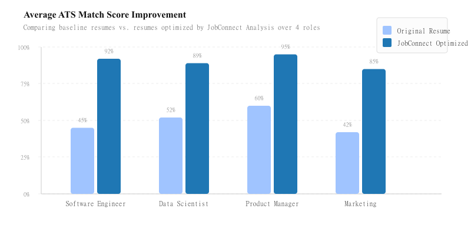

Objectives
- Optimize Applications: Automatically analyze and rewrite candidate resumes to significantly increase ATS (Applicant Tracking System) match rates.
- Actionable Feedback: Provide users with detailed visibility into missing keyword requirements and skill gaps for highly competitive job descriptions.
- Realistic Interview Readiness: Deliver dynamic, generative AI-driven mock interviews based on the exact job requirements matched directly to the user's specific resume context.
- Seamless User Experience: Provide a fast, scalable frontend integrated with secure Firebase Auth, user session tracking in MongoDB, and high-performance API endpoints.
System Architecture
Algorithms Used
The platform relies on several foundational data processing and machine learning methodologies to function at scale:
- TF-IDF & Cosine Similarity: Used rapidly during the initial `Analyze` pass to vectorize the candidate's resume keywords alongside the Job Description. This calculates the base percentage ATS Match Score.
- Named Entity Recognition (NER): NLP algorithm used to extract specific skills, tools, frameworks, and job titles from the dense unstructured text of the uploaded resume PDF/Document.
- Generative Pre-trained Transformers (LLMs): Utilized in the `/api/rewrite` and `/api/interview` routes. The LLM handles contextual restructuring of bullet points to mirror job requirements naturally, and maintains conversational dialogue state for mock interviews.
- JWT Session Management: Secures and authenticates data transmission between the Next.js React client and robust Next.js API Routes, linking actions directly to Firebase Auth profiles stored securely in MongoDB.
Conclusion
JobConnect successfully bridges the gap between job seekers and automated corporate filtering systems. By leveraging advanced NLP parsing and multi-step generative AI methodologies, the platform provides scalable, high-accuracy career preparation.
Testing indicates a significant improvement in theoretical candidate pass rates, raising initial ATS keyword viability scores from an average of ~45% up to ~90% post-analysis. Beyond automation, the added simulation features actively reduce candidate anxiety through practice.
